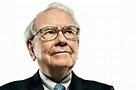

Warren Buffett
Warren Buffett runs Berkshire Hathaway, which owns more than 60 companies.

'I always knew I was going to be rich'
- INTRODUCTION:
Warren Edward Buffett born August 30, 1930 is an American investor, business tycoon, philanthropist,
and the chairman and CEO of Berkshire Hathaway.He is considered one of the most successful investors in the world
and has a net worth of over US$85.6 billion as of December 2020, making him the world's fourth-wealthiest person.
- EARLY LIFE:Buffett was born in Omaha, Nebraska. He developed an interest in business and investing in his youth, eventually entering the Wharton School of the University of Pennsylvania in 1947 before transferring to and graduating from the University of Nebraska at 19.
He went on to graduate from Columbia Business School, where he molded his investment philosophy around the concept of value investing pioneered by Benjamin Graham. He attended New York Institute of Finance to focus his economics background and soon after began various business partnerships, including one with Graham.
He created Buffett Partnership, Ltd in 1956 and his firm eventually acquired a textile manufacturing firm called Berkshire Hathaway, assuming its name to create a diversified holding company. In 1978, Charlie Munger joined Buffett as vice-chairman.
Buffett has been the chairman and largest shareholder of Berkshire Hathaway since 1970. He has been referred to as the "Oracle" or "Sage" of Omaha by global media.[10][11] He is noted for his adherence to value investing, and his personal frugality despite his immense wealth.
Research published at the University of Oxford characterizes Buffett's investment methodology as falling within "founder centrism", defined by a deference to managers with a founder's mindset, an ethical disposition towards the shareholder collective, and an intense focus on exponential value creation. Essentially, Buffett's concentrated investments shelter managers from the short-term pressures of the market.
- AS A BILLONAIRE:
Buffett became a billionaire when Berkshire Hathaway began selling class A shares on May 29, 1990, with the market closing at $7,175 a share.[51] In 1998 he acquired General Re (Gen Re) as a subsidiary in a deal that presented difficulties—according to the Rational Walk investment website, "underwriting standards proved to be inadequate," while a "problematic derivatives book" was resolved after numerous years and a significant loss.
Gen Re later provided reinsurance after Buffett became involved with Maurice R. Greenberg at AIG in 2002.
- 2007–08 FINANCIAL CRISIS:
Buffett ran into criticism during the subprime mortgage crisis of 2007 and 2008, part of the Great Recession starting in 2007, that he had allocated capital too early resulting in suboptimal deals."Buy American. I am." he wrote for an opinion piece published in the New York Times in 2008. Buffett called the downturn in the financial sector that started in 2007 "poetic justice". Buffett's Berkshire Hathaway suffered a 77% drop in earnings during Q3 2008 and several of his later deals suffered large mark-to-market losses.
Berkshire Hathaway acquired 10% perpetual preferred stock of Goldman Sachs. Some of Buffett's put options (European exercise at expiry only) that he wrote (sold) were running at around $6.73 billion mark-to-market losses as of late 2008. The scale of the potential loss prompted the SEC to demand that Berkshire produce, "a more robust disclosure" of factors used to value the contracts. Buffett also helped Dow Chemical pay for its $18.8 billion takeover of Rohm & Haas. He thus became the single largest shareholder in the enlarged group with his Berkshire Hathaway, which provided $3 billion, underlining his instrumental role during the crisis in debt and equity markets.[64]
In 2008, Buffett became the richest person in the world, with a total net worth estimated at $62 billion by Forbes and at $58 billion[66] by Yahoo, overtaking Bill Gates, who had been number one on the Forbes list for 13 consecutive years.In 2009, Gates regained the top position on the Forbes list, with Buffett shifted to second place. Both of the men's values dropped, to $40 billion and $37 billion respectively—according to Forbes, Buffett lost $25 billion over a 12-month period during 2008/2009.
- BERKSHIRE HATHAWAY
In 1956 Buffet formed the firm Buffett Partnership Ltd. in his hometown of Omaha. Utilizing the techniques learned from Graham, he was successful in identifying undervalued companies and became a millionaire. One such enterprise Buffett valued was a textile company named Berkshire Hathaway. He began accumulating stock in the early 1960s, and by 1965 he had assumed control of the company.
Despite the success of Buffett Partnership, its founder dissolved the firm in 1969 to focus on the development of Berkshire Hathaway. He phased out its textile manufacturing division, instead expanding the company by buying assets in media (The Washington Post), insurance (GEICO) and oil (Exxon). Immensely successful, the "Oracle of Omaha" even managed to spin seemingly poor investments into gold, most notably with his purchase of scandal-plagued Salomon Brothers in 1987.
Following Berkshire Hathaway's significant investment in Coca-Cola, Buffett became director of the company from 1989 until 2006. He has also served as director of Citigroup Global Markets Holdings, Graham Holdings Company and The Gillette Company.
Sound investing Can Make You Very Wealthy If You're Not In To Big A Hurry.
>>You Can Know More From Here.